| Name | Photo | Personality | Reasoning | Rating |
|---|---|---|---|---|
| Bam | 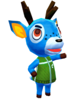 | Jock | Full of energy and vigour, this spritely blue deer is very very cheery and a fun addition to any island. | 9/10 |
| Beau | 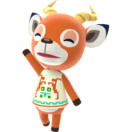 | Lazy | Beau's house is themed to that of a field (fitting for a dear) with a picnic there for him 24/7. He used to have a dog house in his house, but thankfully he removed it as the implications of a villager owning a dog house where dogs are also villagers is a conversation I do not have time for. | 7/10 |
| Bruce | 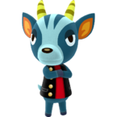 | Cranky | While cranky villagers are largly insufferable as is, his pleasent colour scheme is reassuring. You can also call him 'Brucey' and thats pretty cool I think. | 3/10 |
| Chelsea | 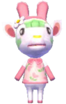 | Normal | As a tie in villager for Sanrio, Chelsea is largely wierd. Having the appearance of green hair, fake rabbit ears and a yellow nose; everything about her is off. | 1/10 |
| Deirdre | 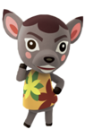 | Sisterly | Being the better of the two sisterly deer is certainly an advantage, and having a mysical mushroom themed house is cool, her use of the catchphrase 'Whatevs' is less than ideal. Also the weird tuft of hair on her head doesn't give her any plus points for me. | 5/10 |
| Diana | 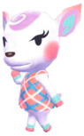 | Snooty | While I may be a little biased on this, I think Diana is pretty cool. Her house is themed to a spa, she will largely be sitting down and reading around the island. Very much worth having around. | 9/10 |
| Erik | 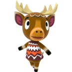 | Lazy | Erik (who is based on a moose) has a very nice personality, consistently claiming to talk to bugs. His house is themed like a ski resort and I think that is pretty damn cool (pun intended). | 7/10 |
| Fauna | 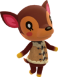 | Normal | An average deer if I've ever seen one. An the average is clearly very good. Having little competition in the personality department and being voted the most popular deer villager by the fanbase at large, she has earned the 8/10 rating. | 8/10 |
| Fuchsia | 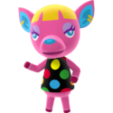 | Sisterly | The amount of unwarrented anger I feel towards Fuchsia is much larger than that of many other villagers. Her colour scheme is a retched colour of pink (for a deer, usually fuchsia is a nice colour but on Fuchsia it looks terrible) and her starting tee is just bad and garish. While she currently uses the catchphrase 'precious' which is terrible in itself, she used to use 'girlfriend' which would have caused me to give her a -2/10. She is clearly the worst sisterly deer and the worst deer generally. | 0/10 |
| Lopez | 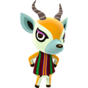 | Smug | The two smug deer villagers are reasonably simmilar in my view. Where Lopez loses out in my view is the fact that he used to have the catchphrase 'buckeroo' but that was changed to 'babang', an objectively worse catchphrase. | 5/10 |
| Zell | 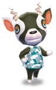 | Smug | The two smug deer villagers are reasonably simmilar in my view. Where Zell wins against Lopez to me is the fact that his house looks very classy. I like his styel | 6/10 |